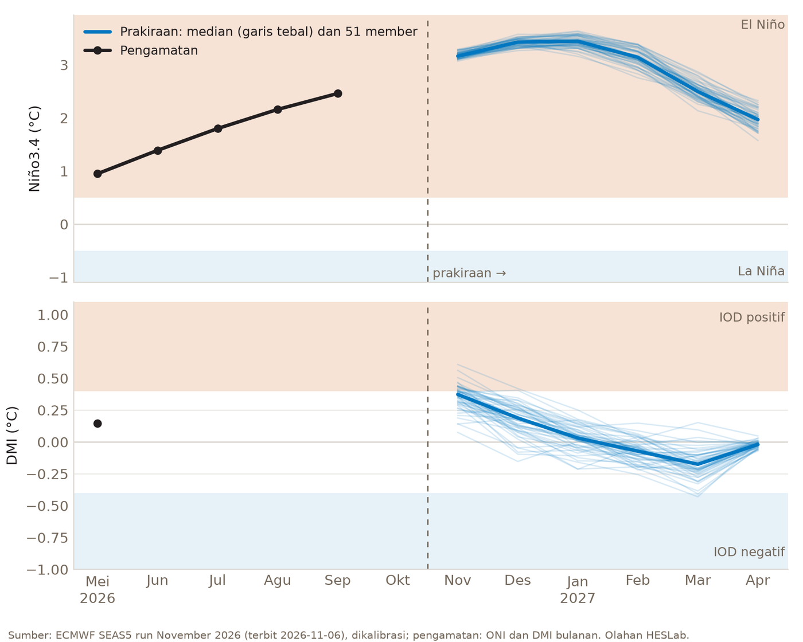
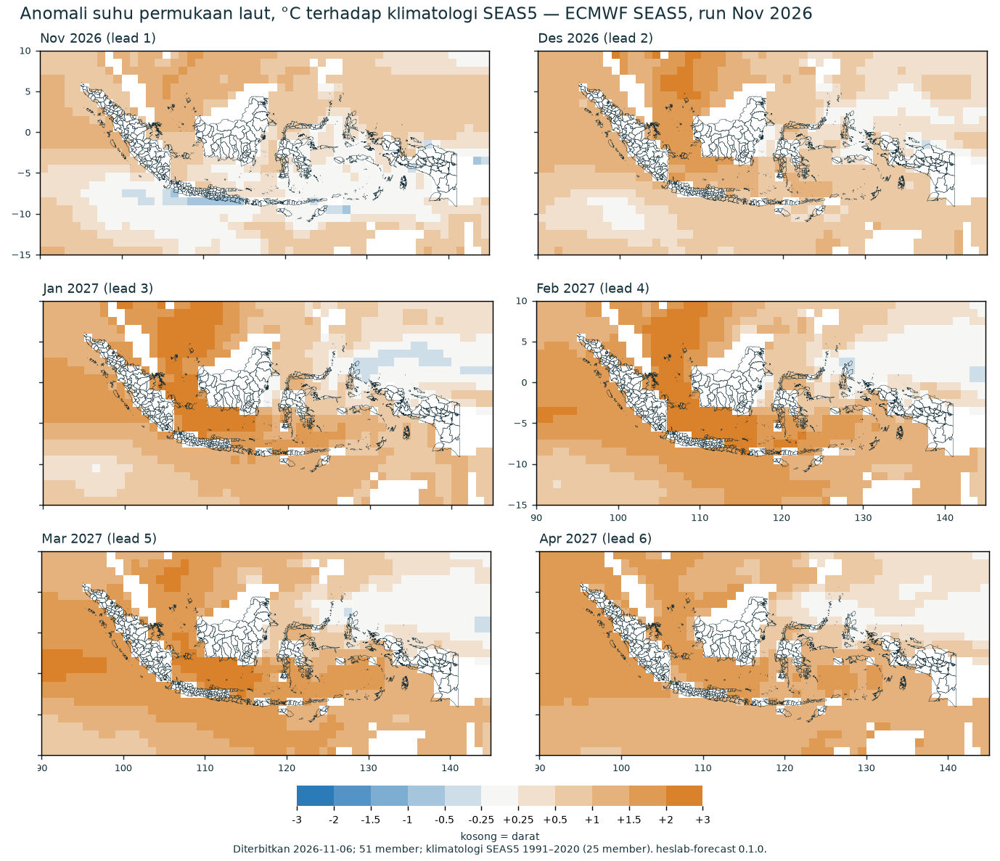
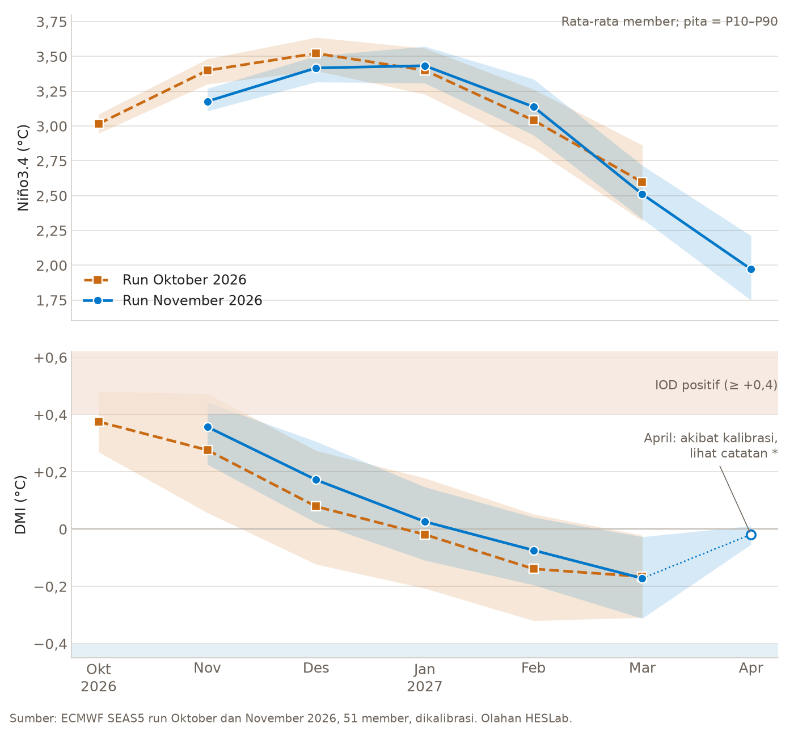
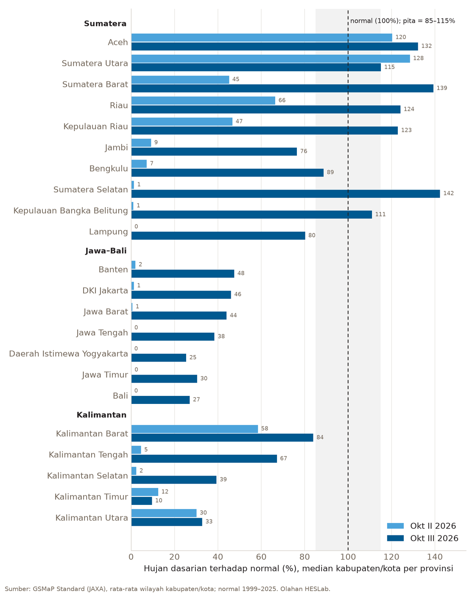

Run terbaru model musiman ECMWF SEAS5, yaitu run November 2026 yang diolah HESLab pada 6 November 2026, masih memperlihatkan El Niño yang sangat kuat. Rata-rata Niño3.4 sekitar +3,4 °C pada Desember 2026–Januari 2027, dan seluruh 51 member tetap di atas ambang El Niño sampai April 2027. IOD diprakirakan menuju netral, sementara laut di sekitar Indonesia bagian barat makin hangat. Di darat, hujan dasarian III Oktober sudah meluas di Sumatera, tetapi 380 dari 516 kabupaten/kota masih di bawah normal, termasuk hampir seluruh Jawa–Bali dan seluruh Sulawesi.
Tulisan ini melanjutkan artikel Oktober dan membandingkan prakiraannya dengan run terbaru. Isinya kajian riset atas run model, bukan prakiraan resmi. Prakiraan iklim resmi Indonesia diterbitkan oleh BMKG.
Tiga hal yang diikuti
Niño3.4 adalah anomali suhu muka laut di Pasifik tengah. Nilai di atas +0,5 °C berarti El Niño, di bawah −0,5 °C berarti La Niña.
DMI (Dipole Mode Index) adalah selisih anomali suhu muka laut antara Samudra Hindia bagian barat dan bagian timur dekat Sumatera. Nilai di atas +0,4 °C berarti IOD positif, di bawah −0,4 °C berarti IOD negatif.
Anomali suhu muka laut di sekitar Indonesia menunjukkan seberapa hangat atau dingin laut kita dibandingkan klimatologi 1991–2020, per kotak 1°.
Prakiraan ENSO dan IOD
Prakiraan diambil dari ECMWF SEAS5 run November 2026 dengan 51 member, lead 1–6 bulan, dan disajikan di halaman Climate Outlook run November 2026 HESLab Portal. Nilai Niño3.4 dan DMI sudah dikalibrasi ke skala pengamatan.

| Bulan | Niño3.4 (°C) | P10–P90 | DMI (°C) | P10–P90 | Peluang IOD positif |
|---|---|---|---|---|---|
| Nov 2026 | +3,18 | +3,11 s.d. +3,27 | +0,36 | +0,23 s.d. +0,44 | 33% |
| Des 2026 | +3,42 | +3,32 s.d. +3,50 | +0,17 | +0,02 s.d. +0,31 | 4% |
| Jan 2027 | +3,43 | +3,31 s.d. +3,57 | +0,03 | −0,11 s.d. +0,15 | 0% |
| Feb 2027 | +3,14 | +2,94 s.d. +3,34 | −0,07 | −0,20 s.d. +0,04 | 0% |
| Mar 2027 | +2,51 | +2,33 s.d. +2,72 | −0,17 | −0,31 s.d. −0,03 | 0% |
| Apr 2027 | +1,97 | +1,75 s.d. +2,21 | −0,02* | −0,05 s.d. +0,01* | 0% |
Nilai utama adalah rata-rata 51 member; P10–P90 adalah rentang yang memuat 80% member. Peluang El Niño 100% pada semua bulan. Peluang IOD negatif 0%, kecuali Maret 2027 sebesar 4% (2 dari 51 member). Tanda * dijelaskan di bagian IOD.
El Niño: puncak Desember–Januari
Puncak rata-rata kini berada pada Desember 2026–Januari 2027. Selisih kedua bulan itu (+3,42 dan +3,43 °C) jauh lebih kecil daripada sebaran member, jadi keduanya sebaiknya dibaca sebagai satu puncak. Sesudah itu Niño3.4 turun menjadi +1,97 °C pada April 2027, masih jauh di atas ambang El Niño.
Seberapa besar El Niño ini
Pengamatan sendiri sudah sangat tinggi. ONI, yaitu rata-rata tiga bulan Niño3.4 dari NOAA CPC, naik dari +0,95 (April–Juni) menjadi +2,46 (Agustus–Oktober 2026). Dalam arsip NOAA sejak 1950, nilai itu tertinggi ketiga, di bawah +2,59 (November 2015–Januari 2016) dan +2,50 (Desember 2015–Februari 2016).
Prakiraan sekitar +3,4 °C berarti melewati rekor itu, dan angka ini perlu dibaca hati-hati. Nilai raw SEAS5 pada Januari 2027 adalah +4,08 °C. Pada kejadian kuat, nilai raw cenderung lebih besar daripada pengamatan, karena itu kami mengalibrasinya dengan regresi linear terhadap ONI tahun 1991–2020. Kejadian terkuat dalam periode kalibrasi adalah 2015/16, sehingga nilai di atas itu adalah ekstrapolasi. Rentang P10–P90 yang sempit menunjukkan kesepakatan antar-member, bukan ketidakpastian seluruhnya. Pesan yang kuat adalah arah dan besarnya secara umum, yaitu El Niño sangat kuat, bukan dua angka di belakang koma.
IOD: menuju netral
Rata-rata DMI +0,36 °C pada November sudah sedikit di bawah ambang, dengan 33% member masih di atas +0,4 °C. Peluang itu turun menjadi 4% pada Desember dan 0% mulai Januari. Perlu dicatat, DMI pengamatan yang tersedia baru sampai Mei 2026 (+0,15 °C), karena data HadISST terbit beberapa bulan terlambat, jadi keadaan IOD saat ini berasal dari model.
Catatan untuk April 2027 (tanda *). Kenaikan DMI dari −0,17 ke −0,02 °C dan rentangnya yang sangat sempit bukan sinyal dari laut, melainkan akibat kalibrasi. Untuk bulan awal November dan lead 6, hubungan SEAS5 dengan DMI pengamatan 1991–2020 sangat lemah, sehingga faktor pengalinya hanya 0,09 (lead lain 0,35–0,61) dan semua nilai terdorong ke dekat nol. Nilai raw April adalah −0,20 °C, tidak jauh dari Maret (−0,33 °C). Nilai ini berarti DMI April praktis tidak dapat diprakirakan dari run ini, bukan bahwa IOD akan tepat nol.
Anomali suhu muka laut di sekitar Indonesia
Peta berikut adalah rata-rata 51 member terhadap klimatologi SEAS5 1991–2020, per kotak 1°. Nilainya raw, tidak dikalibrasi seperti Niño3.4 dan DMI, jadi yang penting adalah polanya, bukan angka persisnya.

Rata-rata per kawasan laut (°C):
| Kawasan | Nov | Des | Jan | Feb | Mar | Apr |
|---|---|---|---|---|---|---|
| Natuna dan Laut Cina Selatan bagian selatan (0–8° LU, 104–112° BT) | +1,22 | +1,85 | +2,19 | +2,11 | +1,78 | +1,53 |
| Laut Jawa (3–7° LS, 106–118° BT) | +0,39 | +1,33 | +1,97 | +2,19 | +2,00 | +1,62 |
| Barat Sumatera (5° LS–5° LU, 90–100° BT) | +0,93 | +1,19 | +1,55 | +1,75 | +1,83 | +1,76 |
| Selatan Jawa (9–12° LS, 105–120° BT) | +0,19 | +0,73 | +1,29 | +1,68 | +1,59 | +1,30 |
| Utara Papua (0–8° LU, 130–145° BT) | +0,71 | +0,35 | +0,05 | +0,06 | +0,12 | +0,24 |
Tiga hal terbaca dari peta dan tabel:
- Sisa IOD positif masih terlihat pada November. Perairan selatan Jawa dan Nusa Tenggara masih sedikit lebih dingin dari klimatologi, dengan kotak terdingin sekitar −0,8 °C di dekat selatan Jawa. Mulai Desember pola dingin itu hilang.
- Laut di sisi barat dan tengah makin hangat. Natuna memuncak pada Januari (+2,19 °C), Laut Jawa pada Februari (+2,19 °C). Kawasan kutub timur DMI (10° LS–0°, 90–110° BT) menghangat dari +0,44 °C pada November menjadi +1,81 °C pada Maret, sejalan dengan DMI yang turun. Kutub barat DMI berada di luar peta ini.
- Utara Papua justru mendekati normal pada Januari–Maret, berlawanan dengan sisi barat.
Penghangatan Samudra Hindia beberapa bulan sesudah puncak El Niño adalah pola yang sudah dikenal. Sebagian nilai juga mencerminkan laut yang secara umum lebih hangat daripada rata-rata 1991–2020.
Dibandingkan prakiraan Oktober
Artikel Oktober memakai run Oktober 2026. Grafik dan tabel berikut menyandingkan kedua run untuk bulan yang sama.

| Bulan | Niño3.4 run Okt | Niño3.4 run Nov | DMI run Okt | DMI run Nov | Peluang IOD positif run Okt | Peluang IOD positif run Nov |
|---|---|---|---|---|---|---|
| Nov 2026 | +3,40 | +3,18 | +0,28 | +0,36 | 20% | 33% |
| Des 2026 | +3,52 | +3,42 | +0,08 | +0,17 | 2% | 4% |
| Jan 2027 | +3,40 | +3,43 | −0,02 | +0,03 | 0% | 0% |
| Feb 2027 | +3,04 | +3,14 | −0,14 | −0,07 | 0% | 0% |
| Mar 2027 | +2,60 | +2,51 | −0,17 | −0,17 | 0% | 0% |
Gambaran besarnya tidak berubah, tetapi ada tiga pergeseran kecil:
- Niño3.4 November turun, Januari–Februari sedikit naik. Nilai November turun 0,22 °C, dan penurunan ini juga terlihat pada nilai raw (+3,99 menjadi +3,74 °C), jadi bukan efek kalibrasi saja. Akibatnya puncak yang semula Desember kini mendatar pada Desember–Januari. Rentang P10–P90 juga menyempit karena lead makin pendek, misalnya untuk Maret dari 0,54 menjadi 0,38 °C.
- IOD melemah sedikit lebih lambat. DMI naik sekitar 0,08–0,09 °C pada November–Desember, dan peluang IOD positif November naik dari 20% menjadi 33%. Sampai Maret kedua run bertemu di −0,17 °C.
- Laut sedikit lebih dingin pada November, lebih hangat pada Januari–Februari. Kawasan kutub timur DMI November turun dari +0,70 menjadi +0,44 °C, sejalan dengan DMI yang lebih tinggi. Natuna November turun dari +1,42 menjadi +1,22 °C, sedangkan Natuna Januari naik dari +2,02 menjadi +2,19 °C dan Laut Jawa Februari dari +1,98 menjadi +2,19 °C.
Pernyataan artikel Oktober, dibaca kembali dengan run November:
| Pernyataan artikel Oktober | Run November |
|---|---|
| Semua member di atas ambang El Niño sampai Maret 2027 | Tetap, kini sampai April 2027 |
| Puncak El Niño sekitar Desember 2026 | Bergeser sedikit: Desember–Januari |
| IOD positif melemah menuju netral | Tetap, sedikit lebih lambat |
| DMI netral mulai Desember | Tetap: 96% member netral pada Desember |
Perbandingan ini menunjukkan kestabilan model dari satu run ke run berikutnya, bukan ketepatannya. Run Oktober belum bisa diuji terhadap pengamatan: ONI yang berpusat pada Oktober (September–November) baru lengkap sesudah November berakhir, dan DMI pengamatan baru tersedia sampai Mei 2026.
Hujan dasarian terakhir
Hujan dasarian (sepuluh harian) dari GSMaP Standard (JAXA) dirata-ratakan per kabupaten/kota, lalu dibandingkan dengan rata-rata dasarian yang sama tahun 1999–2025. Dasarian III Oktober (21–31 Oktober 2026) adalah dasarian penuh terakhir saat laporan ini dibuat. Di bawah 85% dari normal disebut di bawah normal, di atas 115% disebut di atas normal.
| Wilayah | Kab./kota | Di bawah normal, Okt II | Di bawah normal, Okt III | Di atas normal, Okt III |
|---|---|---|---|---|
| Sumatera | 154 | 101 | 40 | 81 |
| Jawa–Bali | 128 | 128 | 125 | 0 |
| Kalimantan | 56 | 52 | 43 | 4 |
| Sulawesi | 82 | 82 | 82 | 0 |
| Nusa Tenggara | 32 | 32 | 26 | 3 |
| Maluku | 21 | 16 | 21 | 0 |
| Papua | 43 | 43 | 43 | 0 |
| Indonesia | 516 | 454 | 380 | 88 |

Gambarannya berubah cepat dalam sepuluh hari:
- Sumatera berbalik basah. Sumatera Selatan naik dari 1% menjadi 142% dari normal, Sumatera Barat dari 45% menjadi 139%, Riau dari 66% menjadi 124%, dan Kepulauan Riau dari 47% menjadi 123%. Aceh tetap di atas normal (132%). Lampung (80%), Jambi (76%), dan Bengkulu (89%) sudah mendekati normal.
- Kalimantan terbagi. Kalimantan Barat (84%) dan Kalimantan Tengah (67%) membaik, tetapi Kalimantan Selatan masih 39%, Kalimantan Utara 33%, dan Kalimantan Timur hanya 10%.
- Jawa dan Bali mulai menerima hujan, tetapi masih jauh di bawah normal. Dari sekitar 0–2% pada dasarian II menjadi 25–48% pada dasarian III. Normal dasarian ini di Jawa bagian timur memang masih kecil: median kabupaten/kota Jawa Timur sekitar 10 mm, sedangkan normalnya 31 mm.
- Sulawesi paling kering. Sulawesi Tenggara, Sulawesi Utara, Gorontalo, Sulawesi Tengah, dan Sulawesi Selatan hanya 1–4% dari normal, Sulawesi Barat 23%.
- Timur Indonesia belum membaik. Maluku 8%, Maluku Utara turun dari 83% menjadi 13%, Nusa Tenggara Barat 17%, Nusa Tenggara Timur 22%, dan enam provinsi di Papua 27–42%.
Hasil ini diperiksa silang dengan produk GSMaP NRT, dan gambaran nasionalnya sama (380 kabupaten/kota di bawah normal, 50 normal, 86 di atas normal). Perbedaan terbesar ada di Kepulauan Bangka Belitung (111% pada Standard, 72% pada NRT), sehingga provinsi ini sebaiknya tidak dibaca terlalu rinci. GSMaP juga cenderung melewatkan hujan ringan, jadi nilai mendekati 0% berarti hampir tidak ada hujan yang terdeteksi, bukan nol mutlak. Angka dasarian II di sini sedikit berbeda dari artikel Oktober karena normalnya kini 1999–2025, bukan 1998–2025.
Satu dasarian basah belum berarti musim hujan sudah mulai, dan belum berarti kekeringan sebelumnya sudah pulih. Pola ini juga tidak bisa langsung diatribusikan ke indeks iklim. Hujan di Sumatera sejalan dengan peralihan musim yang biasa dimulai dari wilayah dekat khatulistiwa dan dengan melemahnya IOD positif, sedangkan kekeringan di Sulawesi, Jawa, dan Nusa Tenggara sejalan dengan El Niño yang kuat.
Ke depan
Yang dibahas di atas adalah prakiraan suhu laut, bukan prakiraan hujan. El Niño yang kuat tidak otomatis berarti setiap bulan sampai April 2027 lebih kering di seluruh Indonesia. Pengaruh El Niño pada hujan Indonesia umumnya paling terasa pada musim kemarau dan peralihan, dan melemah saat puncak musim hujan. Laut yang hangat di Laut Jawa dan sekitar Sumatera juga dapat mendukung pembentukan awan di sekitarnya.
Yang paling patut diikuti dalam beberapa dasarian ke depan adalah wilayah yang sampai akhir Oktober belum menerima hujan berarti, yaitu Sulawesi, Jawa–Bali, Nusa Tenggara, dan Kalimantan bagian timur, terutama untuk air baku, irigasi, dan awal tanam. Di Sumatera, hujan yang sudah di atas normal berarti potensi banjir lokal tetap perlu diperhatikan, walaupun El Niño sedang kuat.
Prakiraan musiman adalah peluang, bukan kepastian, dan diperbarui setiap bulan. Perkembangan hujan dapat diikuti di halaman Rainfall, dan kajian run terbaru di halaman Climate HESLab Portal. Informasi iklim resmi tetap mengacu pada BMKG.
Data
- Prakiraan Niño3.4, DMI, dan anomali suhu muka laut: ECMWF SEAS5 (system 51) run November 2026 (diolah HESLab 6 November 2026) dan run Oktober 2026 untuk perbandingan, melalui Copernicus Climate Change Service. Klimatologi 1991–2020 (25 member). Niño3.4 dan DMI dikalibrasi linear per lead ke ONI dan DMI pengamatan; rata-rata kawasan laut dihitung dari kotak 1° dengan bobot lintang.
- Pengamatan: ONI (NOAA CPC) dan DMI HadISST (NOAA PSL), diunduh 6 November 2026.
- Hujan: GSMaP Standard dan NRT (JAXA), rata-rata wilayah kabupaten/kota, normal 1999–2025, diolah HESLab.
- Contains modified Copernicus Climate Change Service information 2026. Neither the European Commission nor ECMWF is responsible for any use that may be made of the Copernicus information or data it contains.